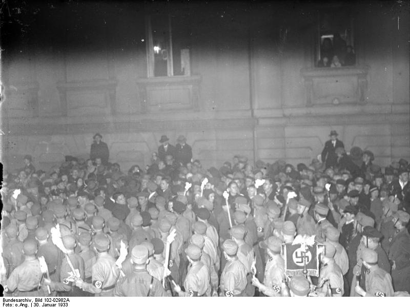

Pauls Geschichte · München · Januar bis März 1933
Der Abend, an dem alles anders wurde
Paul ist 10 Jahre alt und wohnt in München-Giesing. Am Abend des 30. Januar 1933 sitzt er beim Nachbarn vor dem Radio. Hitler ist Reichskanzler geworden. Aus dem Lautsprecher dröhnen Marschmusik und Jubel: In Berlin ziehen Tausende mit Fackeln durch die Straßen.
Vier Wochen später brennt in Berlin der Reichstag. Am nächsten Tag steht in der Zeitung: Die Kommunisten waren es! Nun darf die Polizei jeden verhaften, ohne Richter. Auf Pauls Straße holt die SA zwei Männer aus ihren Wohnungen.
„Die werden schon was angestellt haben“, sagt Pauls Vater. Paul ist sich nicht so sicher.
Paul ist eine erfundene Figur. Die Ereignisse sind wirklich so passiert.
